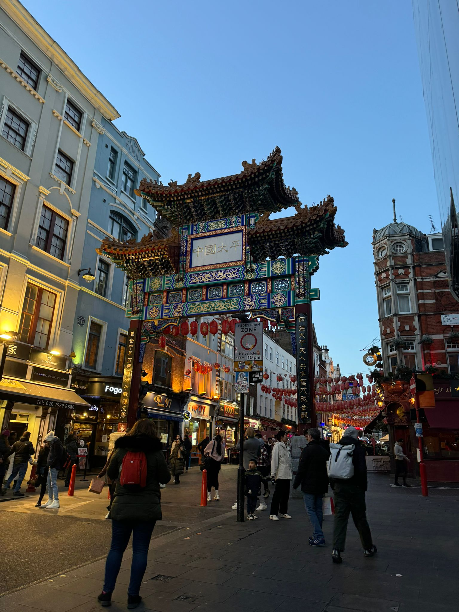
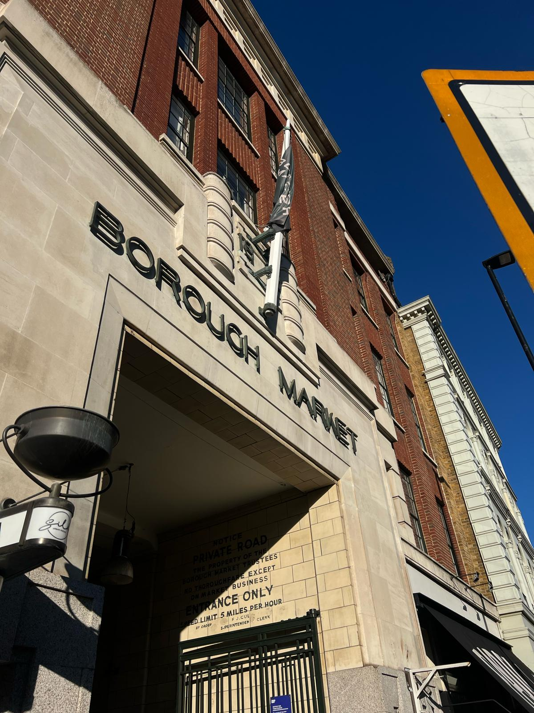
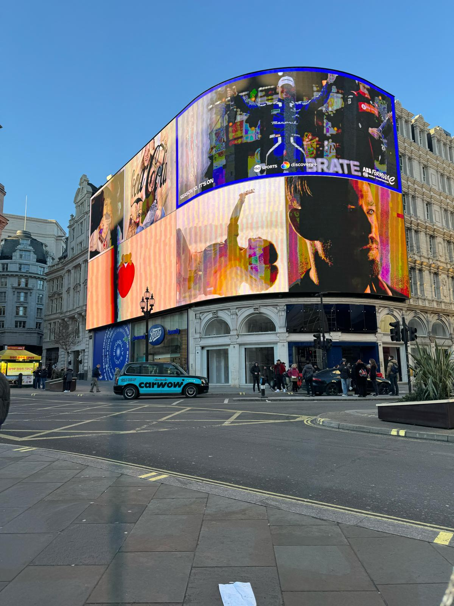
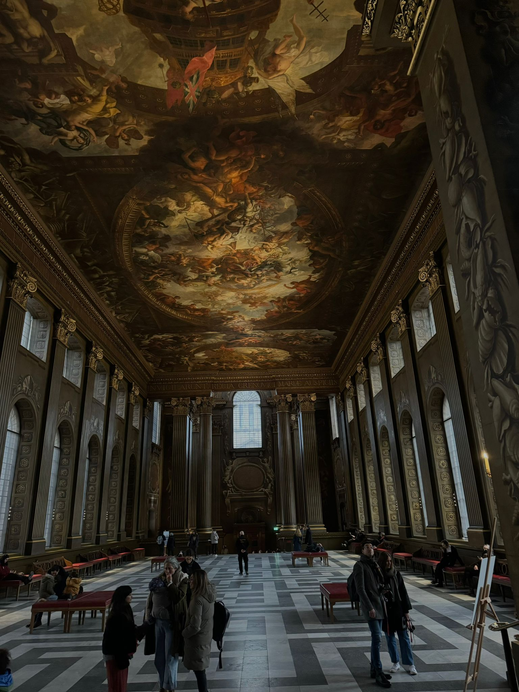

Kostenlose Sehenswürdigkeiten
|

|

|
|---|---|
Chinatown |
Borough Market |
| Chinatown in London ist ein buntes und aufregendes Viertel mitten in der Stadt, in der Nähe von Soho. Es gibt unzählige Restaurants mit leckeren Gerichten aus China und anderen asiatischen Ländern. Chinesisches Neujahr: Das Viertel wird mit Laternen und Drachen geschmückt, und es gibt bunte Paraden und Tänze. Er wurde in China hergestellt und in London aufgebaut. Bedeutung Treffpunkt: Chinatown ist ein wichtiger Ort für die chinesische Gemeinschaft in London und zieht viele Touristen an, die die Kultur und das Essen erleben wollen. |
Borough Market in London ist ein historischer und lebendiger Lebensmittelmarkt, der sich direkt neben der London Bridge befindet. Geschichte Alter: Borough Market gibt es seit über 1.000 Jahren! Highlights Essen: Der Markt ist berühmt für seine frischen und hochwertigen Lebensmittel. Street Food: Es gibt viele Stände mit leckerem Street Food aus der ganzen Welt – von spanischen Tapas über indische Currys bis hin zu frischen Austern. Architektur: Der Markt befindet sich unter historischen Eisenbahnviadukten, was ihm ein einzigartiges Flair verleiht. Bedeutung Es ist ein großartiger Ort, um Londoner Spezialitäten zu probieren und die lebhafte Atmosphäre zu genießen. |
|

|

|
Piccadilly Circus |
Big Ben |
| Piccadilly Circus ist eine belebte Straßenkreuzung im Herzen Londons und ein beliebtes Touristenziel. Bekannt für seine riesigen, leuchtenden Werbetafeln und die berühmte Statue des Eros, zieht es täglich Tausende von Besuchern an. Umgeben von Theatern, Geschäften und Restaurants ist Piccadilly Circus ein pulsierender Knotenpunkt und Symbol für das lebhafte Londoner Stadtleben. | Big Ben ist der Spitzname für die große Glocke im Uhrturm des Palace of Westminster in London. Oft wird der ganze Turm, der heute Elizabeth Tower heißt, als Big Ben bezeichnet. Als eines der bekanntesten Wahrzeichen Londons ist Big Ben ein Symbol der Stadt und ein Highlight jeder London-Tour. |
|

|

|
Old Royal Naval College |
London Eye |
| Das Old Royal Naval College in Greenwich ist ein architektonisches Meisterwerk und UNESCO-Weltkulturerbe. Ursprünglich als Krankenhaus für Seeleute erbaut, beherbergt es heute beeindruckende Barockgebäude und die prächtige Painted Hall. Das College bietet einen faszinierenden Einblick in die maritime Geschichte Großbritanniens und einen atemberaubenden Blick auf die Themse. | Das London Eye ist ein großes Riesenrad an der Themse und eines der bekanntesten Wahrzeichen der Stadt. Es bietet atemberaubende Ausblicke auf Londons Skyline aus einer Höhe von 135 Metern. Eine Fahrt dauert etwa 30 Minuten und ist ein beliebtes Erlebnis für Touristen und Einheimische gleichermaßen. |